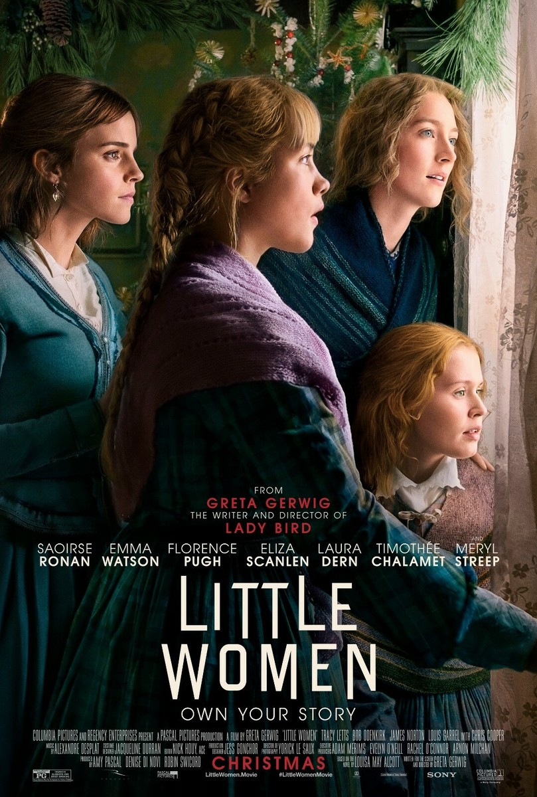
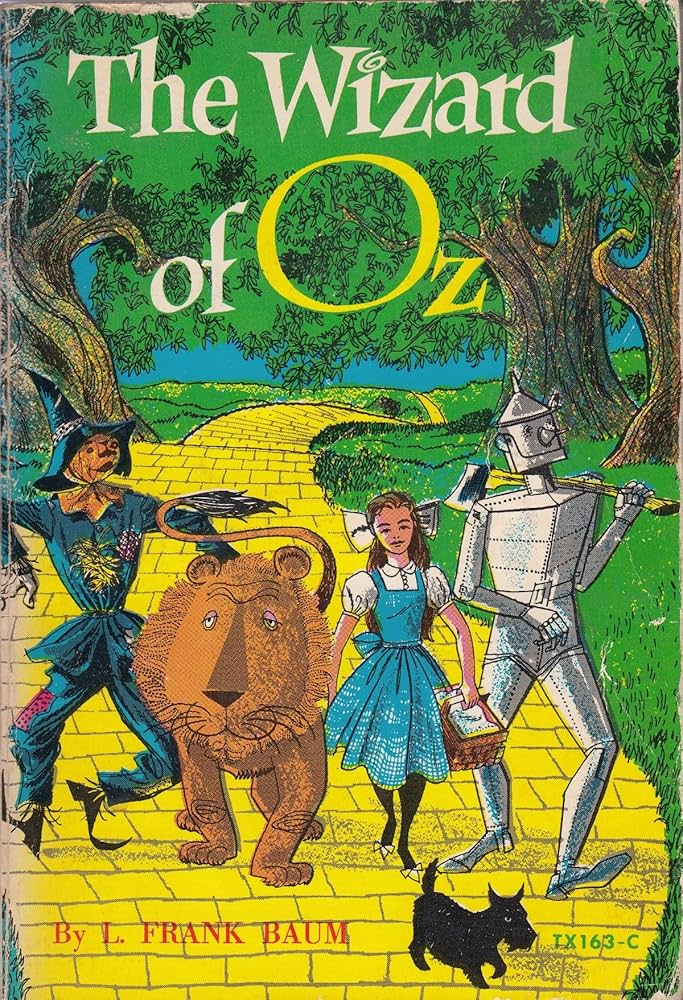
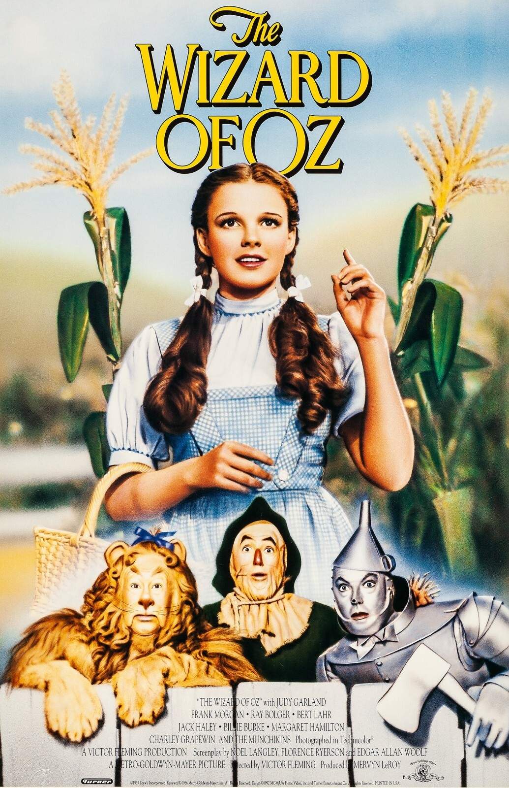
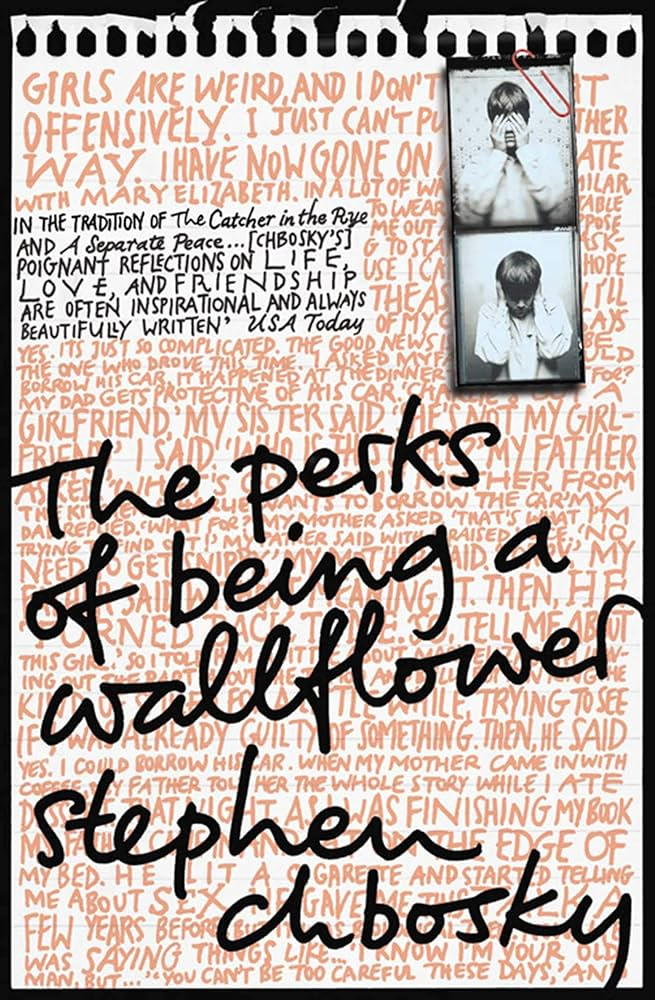
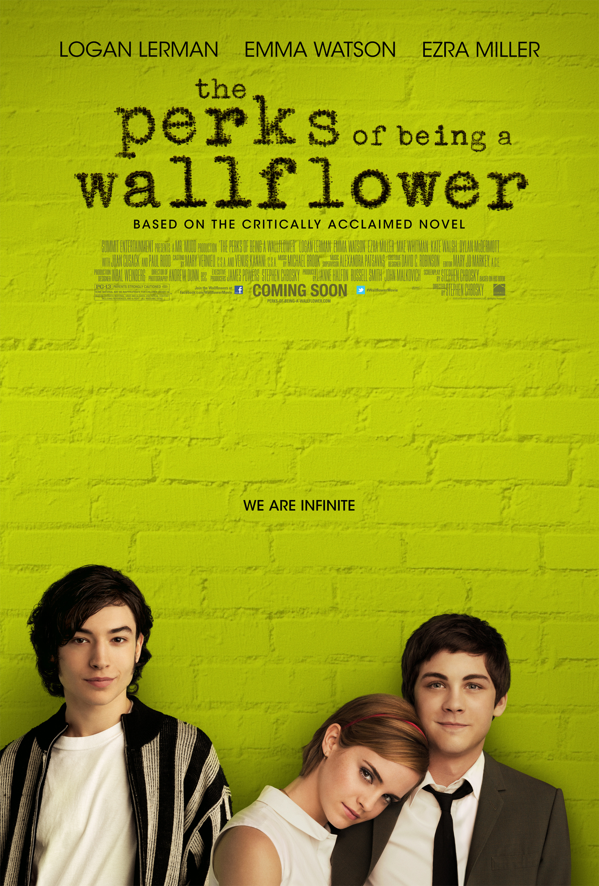
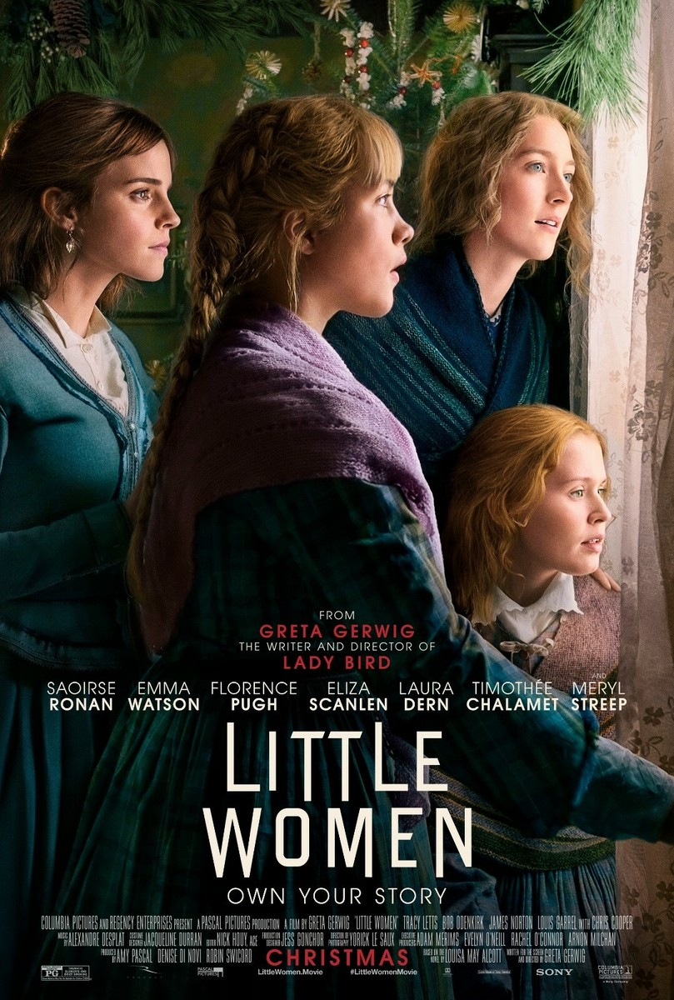
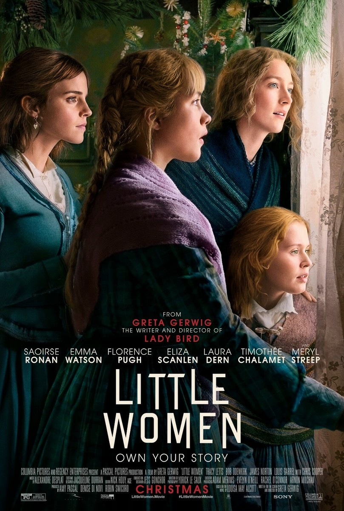

The Notebook follows Noah as he reminds Ally of their unforgettable love story, brought to life by the incredible chemistry between Rachel McAdams and Ryan Gosling. Emotional, romantic, and timeless, it’s a film that proves true love endures.
2.
Little Women

Despite being overlooked at the Oscars, Greta Gerwig’s Little Women is a standout adaptation that adds a clever twist: Jo is imagined as the author of the story itself. This simple shift reframes the classic as a tale of creative passion and ambition, making the beloved novel feel fresh while still honoring its heart.
3.
The Wizard of Oz


The 1939 Wizard of Oz stays true to Baum’s novel, but its vibrant color, rich detail, and magical visuals made the story feel groundbreaking and unforgettable, perfectly capturing the book’s whimsical tone.
4.
The Perks of Being a Wallflower


Stephen Chbosky’s The Perks of Being a Wallflower became a faithful, heartfelt film more than a decade after the book’s release, with Chbosky himself directing. Its honest look at friendship and hardship, plus a strong cast led by Emma Watson and Ezra Miller, helped it resonate with longtime fans.
5.
The Great Gatsby
Baz Luhrmann’s The Great Gatsby brings Fitzgerald’s story to life with dazzling visuals while staying true to its themes of longing and illusion. Leonardo DiCaprio’s performance anchors the film, making this adaptation both stylish and emotionally faithful to the novel.


 
